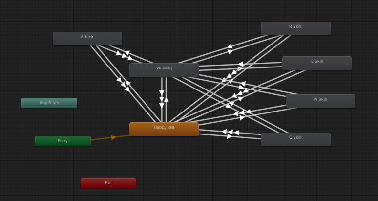

Moba 2v2
Technical details
Engine: Unity
Version: 2021.3.10f1
Genre: MOBA
Team of 4 programmers
Assets: Free from Unity Marketplace
Extensions: Mirror, PlayFab
Video: Link
Description
The game was our bachelors project. My role was a programmer and a team leader, where I was planning the sprints and the tasks for the team. Going into more details about second part, we were working in 3 week long sprints, which were finished with retrospectives. We were using Agile methodology. As a programmer I was responsible for player, minions and animation parts. Also I was often in charge of fixing bugs and integrating the code changes to the main branch. Despite the fact that game is fully functional, has login system, jungle, towers, servers and many more. I will strictly focus on the code that I have created.
Minions
Spawner

Let's start with minion spawning. On server start for each of two lines and two teams we assign the spawner to the correct team, lane, path which they should follow. The code for one of those is presented below.
this.blueTeamTopMinions = new MinionSpawnerScript
(
Enums.TeamMinionSpawnerPosition.blueTeamSpawn,
Enums.Layers.blueTeamLayer,
Enums.MinionPaths.topPathPoints
);Every specific amount of time next wave of minions is spawned. There are two functions responsible for that, one that specifies what type of minion it should be and the other one that spawns it. The type of minions for now are placeholders but code manages it. The code is presented below.
[ServerCallback]
private IEnumerator SpawnMinionWave(MinionSpawnerScript team) // function manages waves
{
for (int i = 0; i < 3; i++)
{
SpawnMinion(team.GetMeleeMinionPrefab(), team.GetSpawnPosition(), team.GetLayer(), team.GetMinionPath());
yield return new WaitForSeconds(0.5f);
}
if (team.CheckIfCanSpawnCannon())
{
SpawnMinion(team.GetCannonMinionPrefab(), team.GetSpawnPosition(), team.GetLayer(), team.GetMinionPath());
yield return new WaitForSeconds(0.5f);
}
for (int i = 0; i < 3; i++)
{
SpawnMinion(team.GetRangedMinionPrefab(), team.GetSpawnPosition(), team.GetLayer(), team.GetMinionPath());
yield return new WaitForSeconds(0.5f);
}
}This function actually spawns it and that's all for the spawning part.
private void SpawnMinion(GameObject prefab, Vector3 position, LayerMask layer, Vector3[] path)
{
GameObject go = Instantiate(prefab, position, Quaternion.identity);
go.layer = layer;
go.GetComponent().SetMinionPath(path);
NetworkServer.Spawn(go);
go.GetComponent().OnMobSpawned();
} Minion movement & attack
We will start with the movement. The minions are following the path that is assigned to them. As they need some kind of AI, we are using NavMeshAgent. They are traveling from one point to the other starting in their own base and ending in the enemy base. The code is presented below.
public void Move()
{
if (!this.agent.pathPending && this.agent.remainingDistance < 0.5f)
{
this.GoToNextPoint();
}
}
private void GoToNextPoint()
{
if (this.currentPointInd < this.pathPoints.Length - 1)
{
this.currentPointInd += 1;
this.agent.destination = this.pathPoints[this.currentPointInd];
}
}Attack is much more complicated, because it needs to check which enemies are in range, who is closest and stop moving through the path. So first we have a trigger that checks who enters minion range and who exits it, thanks to that we are storing this information in HashSet. Code is presented below.
private void OnTriggerEnter(Collider other)
{
if (other.isTrigger)
return;
switch (LayerMask.LayerToName(this.gameObject.layer))
{
case "Blue":
if (LayerMask.LayerToName(other.gameObject.layer) == "Red")
{
this.objectsInRangeHashSet.Add(other.gameObject);
}
break;
case "Red":
if (LayerMask.LayerToName(other.gameObject.layer) == "Blue")
{
this.objectsInRangeHashSet.Add(other.gameObject);
}
break;
}
}
private void OnTriggerExit(Collider other)
{
this.objectsInRangeHashSet.Remove(other.gameObject);
}Next let's jump to function responsible for getting the closest enemy to the minion. We are iterating through the HashSet and checking which enemy is the closest.
[ServerCallback]
private GameObject GetTheClosestEnemy()
{
GameObject closestEnemy = null;
foreach (GameObject currEnemy in this.objectsInRangeHashSet)
{
if (currEnemy != null && closestEnemy == null)
{ closestEnemy = currEnemy; }
else if (currEnemy != null && Utility.GetDistanceBetweenGameObjects(currEnemy, this.gameObject) < Utility.GetDistanceBetweenGameObjects(closestEnemy, this.gameObject))
{ closestEnemy = currEnemy; }
}
return closestEnemy;
}Third part is FixedUpdate function that handled different cases of the closestEnemy and targetEnemy cases. The case when followAttack is true and targetEnemy is not null is the case when the animation is triggered and this animation has embeded trigger of Attack function. The code is presented below.
[ServerCallback]
void FixedUpdate()
{
GameObject? closestEnemy = this.GetTheClosestEnemy();
RemovePlayerWhenNotActive();
if (closestEnemy == null)
{
this.followAttack = false;
this.targetEnemy = null;
}
else if (this.targetEnemy == null)
{
this.followAttack = true;
this.SetTargetEnemy(closestEnemy);
}
else if (!this.objectsInRangeHashSet.Contains(this.targetEnemy) && !this.targetEnemy.Equals(closestEnemy))
{
this.followAttack = true;
this.SetTargetEnemy(closestEnemy);
}
if (this.followAttack && targetEnemy != null)
{
{
this.networkAnimator.SetTrigger("Attack");
this.animator.speed = this.stats.UnitAttackSpeed;
this.transform.LookAt(this.targetEnemy.transform);
}
navMeshAgent.destination = this.transform.position;
}
else
{
this.minionMovement.Move();
}
}Last part is the Attack function that is triggered by the animation. It is responsible for creating the projectile and setting the target and owner of it. The code is presented below.
[ServerCallback]
public void Attack()
{
GameObject instProjectile = Instantiate(this.projectile, new Vector3(this.transform.position.x, this.transform.position.y + 0.4f, this.transform.position.z), Quaternion.identity);
HomingMissileController missile = instProjectile.GetComponent();
missile.target = this.targetEnemy;
missile.owner = this.gameObject;
missile.damage = this.stats.UnitAttackDamage;
NetworkServer.Spawn(instProjectile);
} Player
First I will show animation tree which can be found below. It shows transitions between idle, walking, attacking and skills of the player.
Now it's time for the code. The player has a lot of functions that are responsible for movement, attacking, skills and many more. I will show the most important ones. First is movement.

It is managed with NavMesh and right click on the mouse. The player is moving to the point where the mouse is clicked. As player movement is related to our local client first the operation is made on the client and then it is sent to other players. For the first thing we are using [Command] and for the second [ClientRpc]. We fire raycast to find the clicked position and use it as our destination. The code is presented below.
[Command]
public void Move()
{
this.RpcMove();
}
[ClientRpc]
private void RpcMove()
{
if (!isLocalPlayer)
{
return;
}
if (!EventSystem.current.IsPointerOverGameObject())
{
LayerMask terrainLayer = 1 << 8;
Ray ray = Camera.main.ScreenPointToRay(Input.mousePosition);
if (Physics.Raycast(ray, out RaycastHit hit, this.rayCastMaxDist, terrainLayer, QueryTriggerInteraction.Ignore))
{
this.networkAnimator.SetTrigger("CancelAutos");
this.navMeshAgent.destination = hit.point;
}
}
}Then when we have the clicked point, we have to move the player there. We have other function that tells the agent to do that.
[Command]
public void MoveToPoint(Vector3 destinationPoint)
{
this.RpcMoveToPoint(destinationPoint);
}
[ClientRpc]
private void RpcMoveToPoint(Vector3 destinationPoint)
{
this.navMeshAgent.destination = destinationPoint;
}As this was the most important part for the movement now let's jump to the attacking part. Here when we click someone, player has to be locked on attacking on that target unless the target is changed or destination is changed. When we lock on someone, we have to keep moving and attacking, moving and attacking.

In FixedUpdate function we are calling is FollowAttack. It is responsible for checking if the player should follow someone and attack him or do something else. There is state where there is no one to attack, there is no target, the player should attack or the player should move. Before jumping to code one important thing to mention is that enemies in range are stored in the similar way to the minions in code. The code is presented below.
[ClientCallback]
private void FollowAttack()
{
if (!this.followAttack)
{
return;
}
if (this.targetEnemy == null)
{
this.followAttack = false;
return;
}
if (this.objectsInRangeHashSet.Contains(this.targetEnemy.gameObject))
{
this.networkAnimator.SetTrigger("Attack");
this.animator.speed = this.stats.UnitAttackSpeed;
this.transform.LookAt(this.targetEnemy.gameObject.transform);
}
else
{
this.playerMovement.MoveToPoint(this.targetEnemy.transform.position);
}
}When the player is attacking, the animation is triggered and the Attack function is called. The code is presented below.
[ClientCallback]
public void AttackClick()
{
if (!EventSystem.current.IsPointerOverGameObject())
{
Ray ray = Camera.main.ScreenPointToRay(Input.mousePosition);
if (Physics.Raycast(ray, out RaycastHit hit, this.rayCastMaxDist, this.attackableLayer, QueryTriggerInteraction.Ignore))
{
if (this.objectsInRangeHashSet.Contains(hit.transform.gameObject))
{
this.networkAnimator.SetTrigger("Attack");
this.animator.speed = this.stats.UnitAttackSpeed;
this.transform.LookAt(hit.transform);
}
this.followAttack = true;
this.targetEnemy = hit.transform.gameObject;
}
else
{
this.followAttack = false;
this.targetEnemy = null;
}
}
}
public void Attack()
{
this.CmdAttack(this.targetEnemy, this.gameObject, this.stats.UnitAttackDamage);
}
[Command]
private void CmdAttack(GameObject target, GameObject owner, float damage)
{
GameObject instProjectile = Instantiate(this.projectile, new Vector3(this.transform.position.x, this.transform.position.y + 0.4f, this.transform.position.z), Quaternion.identity);
HomingMissileController missile = instProjectile.GetComponent();
missile.target = target;
missile.owner = owner;
missile.damage = damage;
NetworkServer.Spawn(instProjectile);
} Let's jump to the last part of the player functionalisty, that is skills. The player has 4 skills, 3 of them are normal and the last one is ultimate. Q is a short delayed skill that deals damage in square, W is a projectile that deals damage and can travel specific distance, E is a speed boost and R is a crowd control. First is presented the general function that uses switch case to handle the skills. The code is presented below.
public void Skills(InputAction.CallbackContext context)
{
if (!isLocalPlayer)
{
return;
}
switch (context.control.displayName)
{
case "Q":
this.QSkill();
break;
case "W":
this.ClientWSkill();
break;
case "E":
this.EUsed?.Invoke();
this.ESkill();
break;
case "R":
this.RSkillAnim();
break;
}
}Now I will describe the Q skill. First we check if the skill is on cooldown, if not we set it to true and invoke the event that the skill was used. Then we set the trigger for the animation and raycast to find the point where the skill should be used. Then we call the CmdQSkill function that is responsible for spawning the skill. The code is presented below.

[Client]
private void QSkill()
{
if (this.qOnCooldown)
{
return;
}
// AOE
Debug.Log("Q");
this.qOnCooldown = true;
this.QUsed?.Invoke();
this.networkAnimator.SetTrigger("QSkill");
RaycastHit hit;
if (Physics.Raycast(Camera.main.ScreenPointToRay(Input.mousePosition), out hit, 100, Physics.AllLayers, QueryTriggerInteraction.Ignore))
{
this.transform.LookAt(hit.point);
this.CmdQSkill(hit.point, this.gameObject, this.attackableLayer);
}
}
[Command]
private void CmdQSkill(Vector3 point, GameObject owner, int attackableLayer)
{
GameObject go = Instantiate(this.qPrefab, new Vector3(point.x, 0.5f, point.z), Quaternion.identity);
QScript qScript = go.GetComponent();
qScript.apMultipliers += this.stats.UnitAbilityPower;
go.layer = owner.layer;
qScript.Owner = owner;
qScript.AttackableLayer = attackableLayer;
NetworkServer.Spawn(go);
} Then we have a script that is attached to prefab of Q, it spawns the OverlapBox and deals damage to all of enemies that are in range. This is presented below.

[ServerCallback]
private void DealDamage() // It is used in FixedUpdate
{
Collider[] hitColliders = Physics.OverlapBox(this.transform.position, transform.localScale / 2, Quaternion.identity, this.attackableLayer, QueryTriggerInteraction.Ignore);
for (int i = 0; i < hitColliders.Length; i++)
{
hitColliders[i].gameObject.GetComponent().RemoveHealthOnNormalAttack((this.damage * this.apMultipliers) / 100, this.owner);
}
} This is time for W skill. It has similar logic to Q, but it is a projectile, so I will skip the code here. W has also prefab, that is destroyed after traveling some distance and is destroyed after first collision with the enemy. For E skill as this works very differently, it temporaly changes the speed and acceleration of the player. After the GIFs showcasing the W and E is code.


[Client]
public void ESkill() // function from PlayerSkills
{
if (this.eOnCooldown)
{
return;
}
Debug.Log("E");
this.eOnCooldown = true;
RaycastHit hit;
if (Physics.Raycast(Camera.main.ScreenPointToRay(Input.mousePosition), out hit, 100, Physics.AllLayers, QueryTriggerInteraction.Ignore))
{
this.transform.LookAt(hit.point);
this.networkAnimator.SetTrigger("ESkill");
this.stats.UsedESkill();
}
}
// functions from PlayerStats
public void UsedESkill()
{
GetComponent().acceleration += 200;
GetComponent().speed += 10;
Invoke("RevertESkill", 1.2f);
}
public void RevertESkill()
{
GetComponent().acceleration -= 200;
GetComponent().speed -= 10;
} Last is ultimate ability, in the RSkillAnim the only difference compared to Q and W is below part, where we make it point and click ability. In the CmdRSkill despite having same logic as Q and W, we are also setting the stun and stun time. The code is presented below.

[Client]
private void RSkillAnim()
{
{...}
RaycastHit hit;
if (Physics.Raycast(Camera.main.ScreenPointToRay(Input.mousePosition), out hit, 100, this.attackableLayer, QueryTriggerInteraction.Ignore))
{
{...}
this.rTarget = hit.transform.gameObject;
}
}
[ClientCallback]
public void RSkill()
{
{...} // similar to Q and W
this.CmdRSkill(this.rTarget, this.gameObject);
}
[Command]
private void CmdRSkill(GameObject target, GameObject owner)
{
{...} // similar to Q and W
HomingMissileController missile = ball.GetComponent();
missile.target = target;
missile.stun = true;
missile.stunTime = 3.0f;
missile.damage = 50f + (this.stats.UnitAttackDamage / 5) + (this.stats.UnitAbilityPower);
} Crowd Control
There is a single function responsible for applying crowd control to players and mobs. It is called from the projectile of the players ultimate ability. The code is presented below.
[ServerCallback]
void FixedUpdate()
{
if (this.stunned)
{
this.stunTime += Time.deltaTime;
}
if (this.stunned && this.stunTime > this.stunDuration)
{
this.navMesh.isStopped = false;
this.stunned = false;
this.animator.SetBool("IsStunned", false);
}
}
[ServerCallback]
public void Stun(float time)
{
if (time > this.stunDuration - this.stunTime)
{
this.stunned = true;
this.stunDuration = time;
this.navMesh.isStopped = true;
this.animator.SetBool("IsStunned", true);
}
}Key takeouts
Making this scope of the game was a great experience. I have learned a lot about the Unity engine, how to divide tasks within the team, estimation of the time, what kind of bugs you can encounter and how to fix them - especially when you are working with networking extenstions. Also I have learned how to work with PlayFab. It was enlightning how different is work on game that is not played locally but on the server. Another important things was code reviews and merging the functionalities together which may be sometimes hard, as Unity does not have the best cooperation with Git as a team. Improvement of my AI skills was huge due to the fact that I was responsible for minions and their AI, so they act in natural way in this kind of game, even when they lack chaning the agrro to the Player. Simple skills and crowd control were also a great learning achievement. Giving the player ability to have that much options of interacting with game and still have a good track of it in the prefab was a great experience. Last but not least the fun that we had creating and playing this game. I think I will never forget this time.